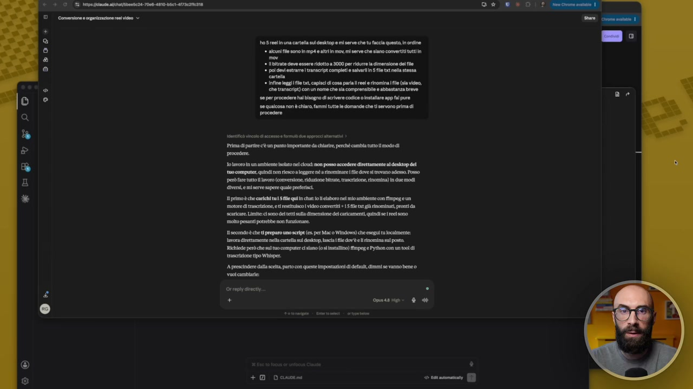
OCR: du e Li Radensrcaceeiimenane titti pe Bs oi © Cameron equazione resi vid > ho Sreelinuna cata sul esttope mi erve che tu faccia questo in ordino + ici e son mp4 an mv mì serve che siano comvertt tuttin ‘bitrate esser ridotto 13000 per ridure a dimension delle "pole estrae |transcript compet sarti lett oa stessa cato ‘+ fine egg! fl tr. caps dicosa paria rele rinomina o (sia vio, che transit) onun nome che sla compresi abbastanza breve ve per procedere hl bisogno di scrivere coca o nstatare pp fai pure ve quaicosa non chiara fammi tutta le domande ch ti servono prima di prcengere Dsop+ DS rita di patire c'è uo puo importante da chiari, perché cambi tuto modo dl procedere. Joven ambiente sato nel is: no posso accedere direttamente al desktop dell tuo computer, quindi no risco a leggere né 2 rinominare le dove i trovano aes Posso: però are tutto lavoro (coversione riduzione trae, racizionerinonia) i due medi verse miserve sapere quale preferiti. Nprimoè che carichi te qu cha: 0laboro nel mio amblente co fmpeg e un motore di eine tico o comete tt nomina, pronti da scaricare Limite cd sno elet sta dimensione del caricament. quindi se elsono. molto pesati porrebbe no funzionare. secondo he ti preparo uno srt (e per Max 0 Wingoms) che esegui ti Jocalmente, vor direttamente nella carla eskop lasci fl dov eli ionina sui posta Richiede però che scompare siano (ost instalino) fimpage Pyshon con un toi dl tasrtzone ipo Whisper. A rescinde dall scelta, parto co queste impostazioni di dei, dimise anno bene 0 vuol ambiarie PVEFETTZIO + Or rey ect . + omnes ® % +0 Dawn cia_
Vi faccio vedere una volta per tutte perché non è la stessa cosa utilizzare Cloud dalla chat sul sito, utilizzare Cloud Cowork e invece utilizzare Cloud Code, che è quello serio, quello potente, quello che interessa a noi, quello che io vi suggerisco di utilizzare. C'è un concetto teorico importante che è l'hardness, ma lo vediamo alla fine. Vi faccio vedere prima la parte pratica e poi vi spiego la teoria, perché so che parecchi di voi gli pesa il culo e la teoria non se la guardano, ma io vi prego guardatevi anche la parte di teoria così capite perché Cloud Code è più potente di Cloud Cowork ed è più potente di Cloud Chat. Ma facciamolo prima in pratica. Mi sono inventato un piccolo task, niente di particolarmente complesso, però vediamo subito i limiti all'opera. Allora, ho 5 reel, una cartella sul desktop. Mi serve che tu faccia questo in ordine. Alcuni file sono in .Mp4 e altri in .Mov, quindi sono due formati di video diverse. Mi serve che siano convertiti tutti in .Mov.
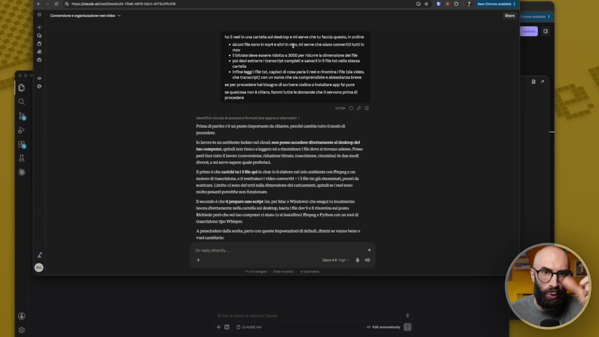
OCR: + + O 35 hipefiscasita/SdenScd4-70n8-2910-d6c1-AF7Ic2NH pe sso © Cameron e oquizazine resi video > ho 5reelinuna cata sul desttope mi serve che tu faccia questo inorcino + alcuni e son mp4 ann mì serve che sano comwertti tuttin © bitrate esser ridotto a 3000 per ridure a dimension dei fl "polo estrae |transcript compete sari le txt ola stossa Carta Infine eg! fl tr. capisci dicosa paria rele inomina o (sia video, che transit) on un nome che sa compresi abbastanza breve ve per procedere ul bisogno di scrivere cosce o nstalae app fi pure ve quaicosa non chiara fammi tutt e domande ch ti servono prima di prccegere DsOO+ DS und 20 Pri di patire c'è uo punto importante da chiari, perché cambi ato modo dl procedere. Joao un ambiente isolato nel iui no passo accedere direttamente l desktop dell tu0 computer, quindi no risco a leggere né a inominare le dove si trovano ads Posso però are tutto lavoro (cnversione. riduzione ira, rascizine rinomina) due medi verse miserve sapere quale preferiti. primo è che archi tu le qu chat: 0} laboro nel mio ambiente co fp e un motore di trascrizione e estitsco|video converti +15 le xt i rinoninar, pronta scaricare Limit cd sno elett sta dimensane del caricamenti quindi se elmo. molto pesanti potrebbe no fnzionare. secondo è he ti preparo uno srt (e per Max 0 Winoms) che esegui ti Jocalmente, ora direttamente nella carla eskop asl fl dov eli ionina sui posta, Richiede però che tn computer san (ox istalino) impe e Pyihor con unto di tasrtzione ipo Whisper. A rescinde dall scelta, parto co queste impostazioni di dei, dimmi se vanno bene 0 iolambiarie. *scRVFIO £ Orrepiy arecty . © È omnda ione ® +0 dawn crt
Il bitrate deve essere ridotto a 3000 per ridurre la dimensione del file. Poi devi estrarre i transcript completi e salvarli in 5 file di testo nella stessa cartella, quindi voglio il transcript, la trascrizione del video. Infine, leggi i file txt, quindi i transcript che ha fatto, capisci di cosa parla il reel e rinomina i file, sia video che transcript, con un nome che sia comprensibile e abbastanza breve. Se per procedere hai bisogno di scrivere codice o installare app, fai pure. Se qualcosa non è chiaro, fammi tutte le domande che ti servono prima di procedere. Vi faccio vedere anche la cartella, ci sono questi file dentro. Vedete i file sono belli grandicelli, sono file da 200 MB, 160 MB, 200 MB e così via. Alcune .Mp4, alcune .Mov hanno questi nomi strani così, perché sono dei reel che ho fatto su Instagram. E questo è un task che ho dato prima a CloudChat. CloudChat questa cosa non la può fare, adesso lo vediamo subito. Ci dice un paio di cazzatine, però diciamo non la può fare. Dice ok, prima di partire c'è un punto importante da chiarire, perché cambia il modo di procedere.
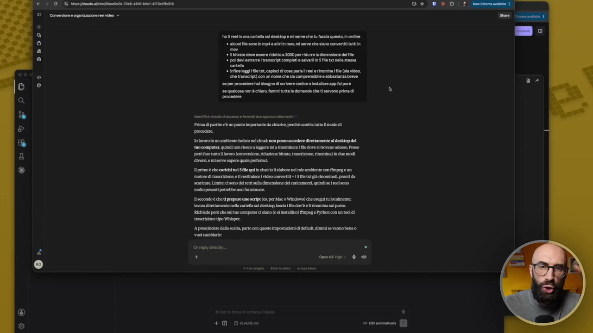
OCR: + + O 5 hipefticasica/Sbentcd4-70n8-4910-d6c1-AI7Ic2N pe 080 © cameron e oquizzazine si video > ho reelinuna cata sui desttope mi serve ch tu fcca questo in rcino + alcuni le sono mp4 an mov, m serve che sano comvertt tutt in Dsop+ tto ev se ton 30000 timone Friuli pria ilo O gi fot coco part nominali av SRENTONI it pamecediconpaao ecu ela (persiane, 1) fis DS Prina di patire c'è un punto important da chiari, perché cambi tuto modo dl procedere. Joven ambiente isolato nel is: no passo aceder direttamente al desktop dell tuo computer, quindi no risco a leggere né rinominare le dove i trovano ads Posso però are tuto lavoro (versione. riduzione ira, rascizione rinomina) due medi tversemiserve sapere quale preferisci. primo è che archi tue quin chat: 0} elaboro nel mio amblente con fimpeg e un motore di treizIone etico vio convert + e tt là nomina, pronti scaricare Limite cd sono delitti sta dimensnne del caricamenti quindi se elsono. molto pesanti potrebbe no fanzionare. econo he ti preparo uno srt (ci per Mac 0 Windows) che esegui t ocslmente: vor direttamente nella cares desktop asc fc dov eli ionina sui posta. Richiede pero che suo compare iano (ost salino) fimpage Python con ur toi dl trasrtzone ipo Whisper. A prescindere dall scelta, parto co queste impostazioni di dei, dimmi se vanno bene 0 viotambiarie *scRERVEF IO li Ore iect. . + omnes ® +0 Doom cri
Io lavoro in un ambiente isolato nel cloud, non posso accedere direttamente al desktop del tuo computer, quindi non riesco a leggere e rinominare i file dove si trovano adesso. Posso fare tutto il lavoro in due modi diversi, in realtà non è vero, qua dice che può fare una cosa ma non la può fare, tecnicamente non è fattibile, però vediamo cosa ci propone. Il primo è che tu carichi i cinque file qui in chat. Vediamo un attimo questa cosa quanta è realistica. Sono file da 200 MB, sono cinque, potremmo farcela una buona connessione, magari il browser che regge e così via. Però sappiamo che anche sull'upload dei file, vediamolo al volo qua, ci sono dei limiti che ci dà stesso Antropic. I file possiamo massimo caricarli 20 per chat e massimo 500 MB per file.
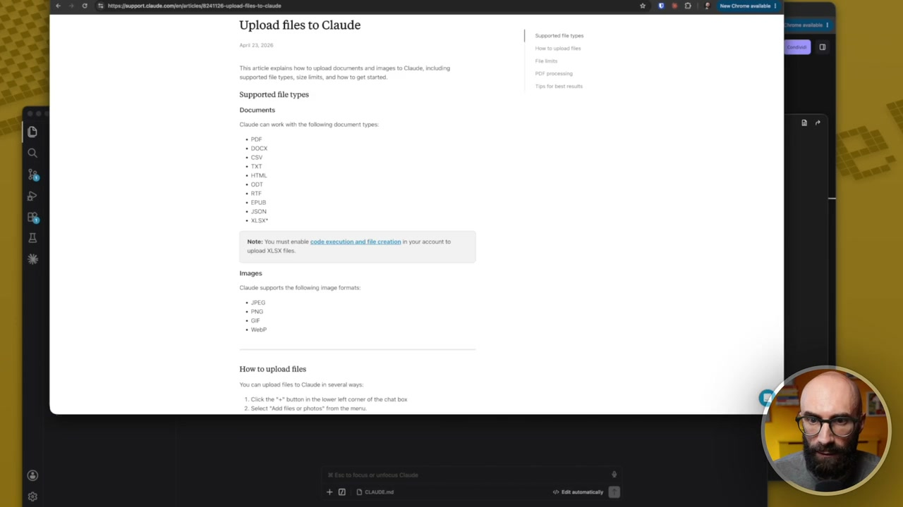
OCR: Upload files to Claude Supported file types How to upload files
Se invece siamo in un progetto 30 MB per file, quindi già questo è un grosso limite. Se io invece di avere cinque file qua ne avessi 25, già tecnicamente questa cosa non sarebbe possibile farla dentro il browser.
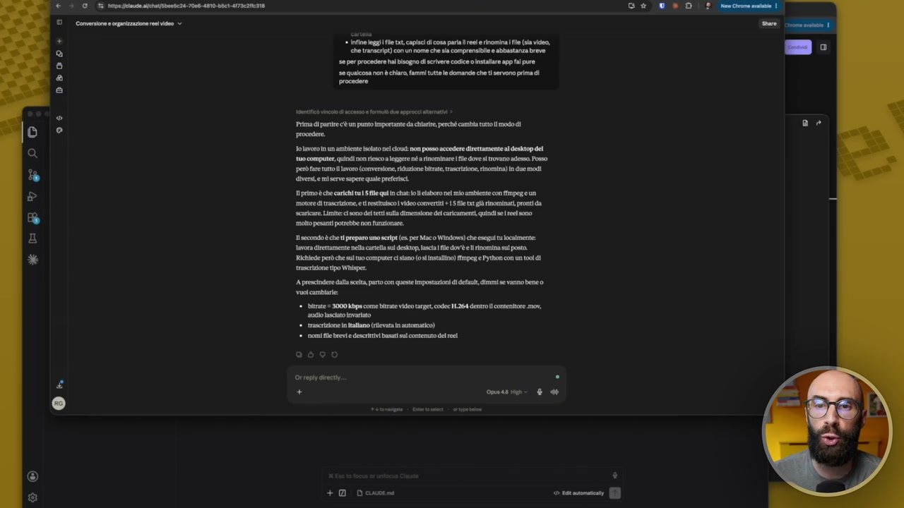
OCR: + + O % tapesisucasichaibeeSc26-70n8-4510-20c1-AI7IcAN pe sso © Common equazione reno © ine ag) 'e tt caps cosa paria rese rinomina o (avide, che ranacipi) con nino che sa compren e sbbastanzaeve 20 per procedere hl bisogno di scrivere coca o nstalre ap i pure ne quaona non har fammi tutte Gomande ch servono prima i ficensee Dsop+ Prima di patire cè un puo important da chiari, perché cambia tutto modo di procedere. o voro ti un aibene slo pel iu: no passo accedere direttamente al desktop dell tuo computer. quindi no risco a lggere né a rinomiare le dov si trovano ass Posso: però fare tuoi aero (comversione,iduzione bitrate, trascrizione rinomina) due modi vr e mi serve sapere quale preferisci i primo è che cari ul ile quin chto i caboro el mio ambiente con mpeg one i traeriione. i etico vo converti + 1 e tt i insiti po da scrae Limite cino desti lla dimensione de cacamenti quindi se recon. moto pesanti parebbe no Panzionare. i seco è het preparo uno srt (per Mac 0 Winkyw) che esegui camente. vor direttamente nella carl deskop lascia ie dovÈell rinomina su post Richiede per che ul no computer san (os instalino) page Pyihor con un toi di testine ipo Wiispex. ‘A prescindere dala scelta, ario co queste impostazioni di dei, dimmi se vanno bene 0 soicambare. + bitrate 3000 ka cone bitrate video age code 04 dentro conentoe x suo scio marito + iron talamo (rievata i utomtio) cei beve descrivi bs nl contento deci DS VEFETTEZO adoo £ Or resysrecty . + omnssino & #0 cai cin
Poi mi dice, quindi ci sono due strade, carichi i file dentro la chat, io li elaboro nel mio ambiente con FFmpeg, è un motore di trascrizione. Questa cosa in realtà non riuscirebbe a farla perché l'ambiente che ha è un ambiente limitato, quindi qua ce lo dice ma tecnicamente invece non riesce a farla. Mentre Cowork in parte può farlo e lo vediamo tra un attimo. Ti restituisco i video convertiti più i cinque file txt già rinominati. Limite, ci sono dei tetti sulla dimensione, quindi se i reel sono molto pesanti potrebbero non funzionare. Quindi qua già sono emersi una serie di limiti. Innanzitutto noi dobbiamo caricare i file, questo è proprio vecchio approccio, 2025, con Cloud Cowork questa cosa finisce perché lavora sul nostro computer, sui nostri file, quindi non è che devo caricare dei file dentro una chat, però qua gli devo caricare i file. Ci sono dei limiti nel numero di file che posso caricare e nel dimensione dei file. Ovviamente questo è un esempio, vedete il vostro caso, magari non ci avete i file video, ma ci avete dei pdf, delle fatture, delle presentazioni, dei preventivi, delle trascrizioni, delle registrazioni video, delle riunioni, che quindi sono sicuramente più pesanti di 500 mega.
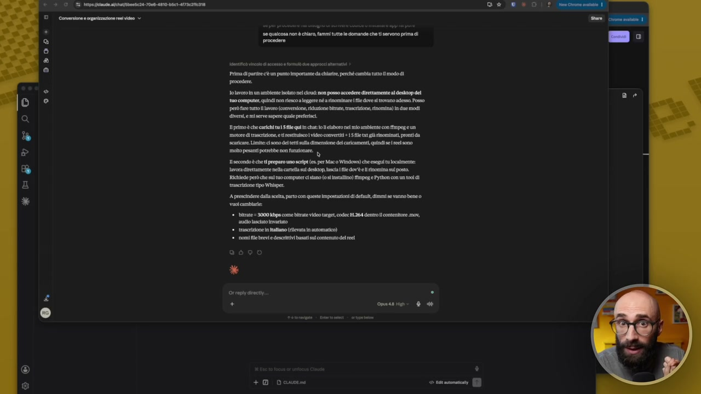
OCR: du e Li Radensrcaceeiimenane titti pe eso © Cameron e eurini vi © Prima di patire è un punto portante da chiari. perché cambia nuto modo di procedere. Jo ivo tun biente soluto nel iu: no passo accedere direttamente al desktop dell tuo computer, quindi no risco leggere né rinominare le dove si trovano des Posso perbae rutto i avro (eversione riduzione ira trascrizione rinomina) ie medi insiemi serve sapere que preferisci i primo è che carichi tile quin chat ol elaboro el mio ambiente con mpeg eun motore di trazione. etico o convert + fe tt i rinominati pronti da scaricare Lime cd sono delta dimensione del caricamentl quindi se rel sono moto pes porte n unione. seco è che preparo uno scrp (spe Maco Windoms) che esegui camente: vor ietamente nella cartella sl deskop sci fc dov eli inonia sul posta. Richiede però che sto computer sano ox instalino) fimpage Pyihon con unto di trasrtzione ipo Whispe. A prescindere all scel, parto co queste impostazioni di ei, dimmi se vanno bene 0 dDsop9+ DS (è) Q ti TS ® a * + omnssion: ® CS +0 down © pane
Oppure delle call one to one con i vostri clienti e magari è un cliente che seguite da un anno e ci avete 50, 60 call one to one e così via. Quindi tutti i limiti stanno subito emergendo. Poi lui elaborerebbe, in realtà non può farlo perché tecnicamente non può fare la parte di trascrizione, però qua dice che la fa, non è vero, la può fare in Cowork. E poi se pure la potesse fare dobbiamo scaricare, quindi anche quella parte là è tutta manuale, tutta 2025, quindi mi fa questo zip, dice lui che io scarico e poi devo aprire i file textino, spostarmeli e così via. La seconda, la seconda beh non ne parliamo proprio di base, la seconda è proprio diciamo 2023 addirittura, ti prepara uno script per Mac o per Windows che tu esegui localmente, quindi scrive del codice ma posto codice non ne può fare nulla, perciò dopo dovete vedere pure la parte teorica perché vi spiego perché tecnicamente ci sono questi limiti.
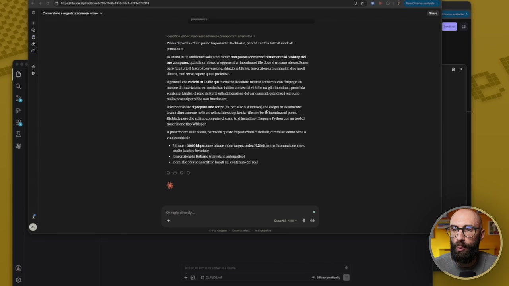
OCR: du e Li Radensrcaceeiimenane titti pe sso © Canson equazione rei id > Prima di patire è un punto important da chiari, perché cambi tut modo di procedere. Joao tn un abiente slo nel id: no posso accedere direttamente l desktop dell tuo computer, quindi no risco a leggere né rinominare le dove si trovano adessa Posso però ae tuto lavoro (conversione. riduzione ira, rascizine rinonia) due di divers, mi serve spore quale preferisci. Mprimo è che carichi equi chat: o}elaboro nel mio ambiente con fimpeg eu motore di trmeizione. ct tito o camere tt gi nominati pronti da scaricare Limite cisco dette ua dimensione de caricamentt. quindi e eelscno molto pesanti parebbe no azionare. secondo è che ti preparo uno srpt (cs per Mac 0 Windoms) che esegui Jocalmente: vor iettamente nell carla deskop lasci fc dov e Rtnoina su posta. Richiede però che sto compare iano (os stati) ip Py con un toi di tartine ipo Wiispes. A prescindere dall scelta, part co queste impostazioni di deu, dimmi se vanno bene 0 9° DBOO+ VEFEZRZZIO + omnes ione ® CS + Di Badia cre
Di questo codice non potrebbe fare nulla, lo dobbiamo eseguire noi sul nostro computer, però aspetta perché per eseguirlo devi installare FFmpeg, quindi lo devi installare tu e magari voi non sapete che cos'è FFmpeg, come si installa, devi installare Whisper, lo dovete installare voi, magari voi non sapete né che cos'è né come si installa e dovete avere installato diciamo il pacchetto Python per poter eseguire, scrivere ed eseguire il codice Python sul vostro computer. Pure di questo potreste non sapere che cos'è, come si installa e così via. Quindi diciamo questa qua in chat l'ho proprio interrotta qua, è solo per farvi vedere come qua proprio non possiamo fare niente delle cose che vorremmo fare, però passiamo diciamo a una versione intermedia. Metto lo stesso identico task dentro Cowork e lui parte con una serie di cose, dice ho controllato l'ambiente, ho già installato FFmpeg, posso installare un sistema di trascrizione Whisper, Whisper è una IA gratuita di OpenAI che permette di lavorare con, di fare le trascrizioni, in generale di lavorare con i file audio, video, sulle trascrizioni è molto utile, è molto molto forte.
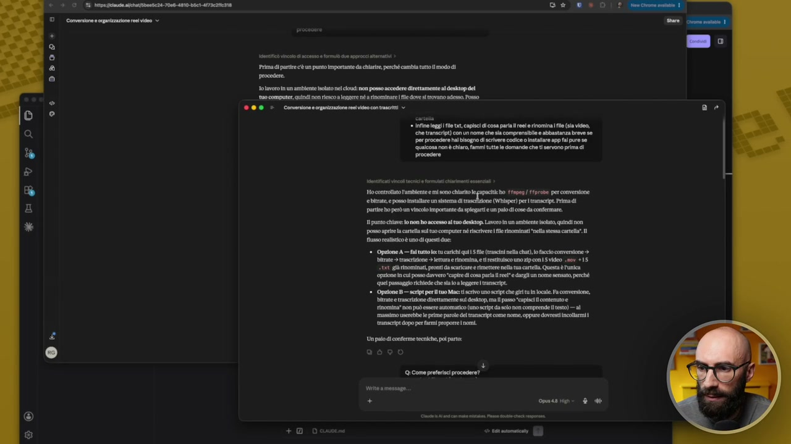
OCR: * + O 5 tipefainzaaic/iraic24-7008-A010-2ECI-AT7ICIE pe eno © cameron e guiztzine rei io © Prima di patire c'è un punto importante a chiari, perché cambi tut modo di procedere. Jo io tun abiente sato nello: no posso acer direttamente l desktop dell tuo computer, quindi no risco a leggere né a inominae le dove i trovano ads Posso © > Convnione e ogiizazion esviocen aci © DsoOp9+ DS infine eg) fl tt. capii i cosa paria i reele rinomina fe (ia viso, che anse) cn n nome che si comprensible abbastanza breve se per procecare hal bisogno di srivere cole 0 instaare app fai puro se ‘qualcosa no è char. ammi tutele damanse che i servono prima Procedere Ho colato ambiente e misano chiarito ho fiapen/ Ftp perconventone tate e osso stalle un sistema (bsper) peri ransrp Prima i patire ho però un ineolo importante da splegart uni podi cone da confermare. 1 unto chiave o non o access tuo desktop Lavoro un ambite isla quindi non posso prive a camel tuo computer riscrivere Me rinomina nel stess cate 1 uo reso uno di queste ». Opaione A — fatto carichi qu 5 le (rascni e cha) faccio conversione > tate rsrizine letture rinomina, rettlsco un coni video me» +15. 1 pi ibonina. pro a scaricare rimettere ell tu cartella Questa è unica opzione cul posso davero capire di cosa para rel e darglun ome sensa perché ‘pago chie che ala lege transerip. + Opasone serpe perito Mac crv uno cip che ir io Pa comvensone, tate trscrizione direttamente si desktop ma paso capisci contenzne tomi” o où essere atomico (uno script da cio nen comprende sto) — al sio usechbe e pie parce de] anseript come ome. pure dovresti col transit dopo per farmi proporre on. (È) a Do » » a * lo Un paio di conferme tecniche, po parto: © LE 4 QU Coma preersci procedere? Wta a message + opmia reno & + D: Deve IT]
Diciamo alcune cose però io non ho accesso al tuo desktop, diciamo gli possiamo dare accesso a una cartella specifica, qua non c'era l'accesso, però diciamo se gli diamo accesso potrebbe lavorare dentro una cartella. Quindi dici carichi bene tu i file dentro questa chat, io faccio questa conversione, bitrate, trascrizione, lettura e rinomine, poi ti restituisco uno zip con i 5 file più i 5 txt oppure ti faccio l'opzione B, questa del Mac diciamo che noi ignoriamo non ci interessa. Qua però sono andato avanti, ho detto ok facciamogli fare l'A, lui dice che può farla questa cosa, in realtà non può farla perché ha tante limitazioni pure su questo e in tutto ci ho messo credo più di un'ora, non mi ricordo se dopo si può vedere proprio il timestamp. Io ho detto ok allora procediamo con l'A, mi ha chiesto i file in che lingua sono diciamo in italiano, 3000 ha chiesto se 3000 era diciamo 3 megabyte di bitrate, io ho detto di sì, perfetto si è fatto il piano, ha detto caricami i file qua dentro, quindi io gli ho caricato fisicamente questi 5 file, ricordiamoci no, file da vari megabyte, quindi questa cosa di dover caricare ovviamente se hai dato accesso alla cartella l'ha superata però diciamo può essere un limite in alcuni casi.
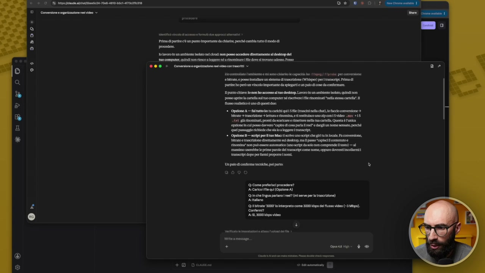
OCR: di e LA Radensrcmaceeimenanentittttind pe spo © cameron equine resi vid © Prima di patire c'è un punto important da chiarire, perché cambi tut modo di procedere. Joao t un ambiente lato nel lodi no passo accedere direttamente l desktop dell tuo computer quindi no risco a leggere né rinominare le dove trovano ass Posso © > Convnionee sguizazion esi viso con menti © Dsop+ DI 10 colato azblee e mi 000 chiaro le capaci bo 1inpeg robe per cnvensiane eta, osso astaliae usim i tasrtzione (Whisper) per ranscipe Pim di parve o però tu vincolo importante a splegart uni pad cone da confermare. punto chiave non ho accesso tuo desktop Lavoro n un ambiente sat quindi non posso pre a carla sl uo computer n risrvere le rinominati ell stess carte 1 fumo etico è uno diquest ds. =. Opaione A — fa tutto at carichi qu 5 le (trascni el cha) 1 fcco conversione > trat traserizine lettura rinonna.e restiiscounop coni S video nov +15 VEFETTZIO Q Come pretruiprocedere? A Carollo qui Opzione A) Qrinche ingua parano ee? (mi serve peri trascrizione) A fto Qi btrat 500 lo nterpreto come 300 ip el ius video (3 Mpa). Contermi? 483000 kbps video CS Verte a ressage + Ormea vm & +2 Dow % te maman (DÒ)
Qua dice ok perfetto li ho ricevuti, comincio a ispezionare, parte come se fosse in grado di fare questa cosa, ecco la situazione di partenza, mi metto a fare questo, ho già fatto clip 1, oh wow ho detto cavolo dopo qualche minuto aveva già fatto clip 1, te l'ho ridotto da 250 mega, 23 mega e così via. Dice ma facciamo una cosa, adesso mi metto a lavorare in parallelo, faccio le conversioni, in parallelo installo pure Winsper così andiamo più veloce, sto facendo il file 2, poi dice aspetta mi metto pure a estrarre l'audio dal file 1, così vado in parallelo, così velocizziamo, mentre ne comprimo uno ti faccio il transcript di un altro.
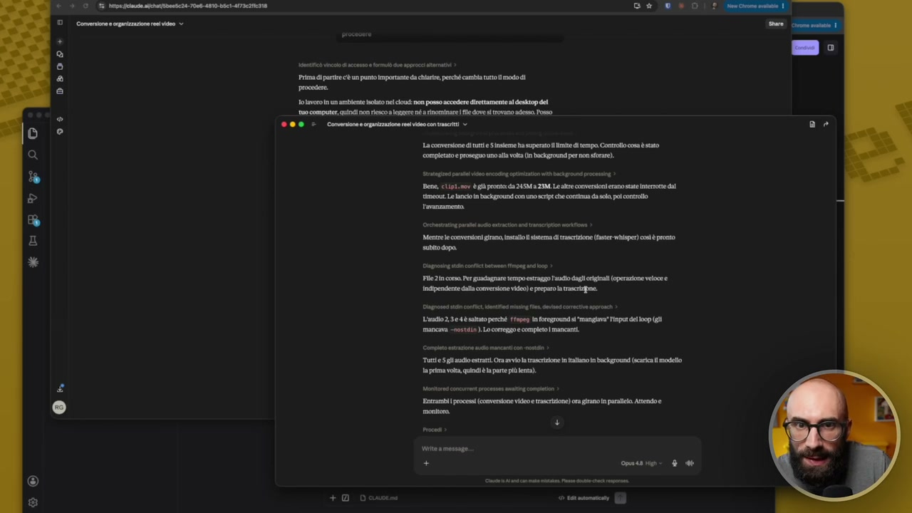
OCR: * + 5 tipefainzasict/iraic24-7008-A010-2ECI-AN7ICIE pe Boi © Cameniene e enieuzine rei vid © Prima dl patire c'è un punto importante da chiari, perché cambi tato modo di proce. Jo or tun ambiente sato nello: no passo accedere direttamente l desktop dell tuo computer quindi no risco leggere né rinominare e dove i trovano ads Posso © > Convnione e ogiizazion rsiviso conati © Dsop+ DS La eveverstone di tut insieme ha superato mie i ema Coetolio cosa è stato otpletatoe proseguo uno alla volta i chron per non serre). Srmgimo pensi se co ceti mn grani ccm Bene, ci. nov è già proci da 45M a IM Lealtre conversioni erano state inerte dal timeout Lelancio a background con Uno script che conta da sco pol control vinzimenta ron pri so rc and mugnaio Mente e converdori grana installo istema di irasertzione (str iper) cosè prot subiodopa (È) (ci ti » Si a * agg st coi eran fp nino le in coordinare tempo estraggono dagli orgia (operazione veloce e dipendenze dala conversione vsco) preparo la rassegne. gnomo cit sent marg fn nd cme prc th 2,364 saltato perché. pg n oregroad mangiava” np elio (1 mancia «osta ).Lo cormeggpe completo) manca. ite Sl ato ttt. Ora vol traserizione n alio i cksround (rica limo ara vota, quindi paste più festa). on acuti n como entrambi proce (oaventone vide trascrizione) oa girano ln paria Afendo e CS 4 + opada reno & +0 Down te maatcae (D)
Poi dice no scusami mi sono accorto che questa cosa non riesce a funzionare, ci sono dei problemi in background, si stanno accavallando i processi e così via, ho fatto gli audio, adesso faccio i transcript, devo scaricare il modello per la prima volta, questa cosa non la può fare, non è vero che la può fare, mentre la può fare Cloud Code lui non la può fare, perché non può installare cose, Winsper mi sembra che oltre un giga, cioè una roba pesantissima da installare in un ambiente virtuale, perché questo gira in un ambiente virtuale. Dice sto partendo con i processi in parallelo, quindi qua sembrava che stesse andando tutto alla grande, oh qua era passato già tantissimo, fatemi vedere se posso vedere, non c'è il timestamp, volevo farvi vedere proprio i minuti, vabbè comunque questa roba qua è durata più di un'ora, l'ho lasciato tutto perché ho detto così non lo faccio in diretta registrando che non ce la faremmo mai, era solo per darvi un'idea di se sta roba è durata un'ora, quindi non c'è nessun vantaggio se lui ci mette un'ora per fare una roba così. Dice vabbè in background non riesco a farlo in parallelo, facciamo che faccia un passo indietro, mi metta a fare tutto in serie e quindi già stiamo perdendo un sacco di vantaggi.
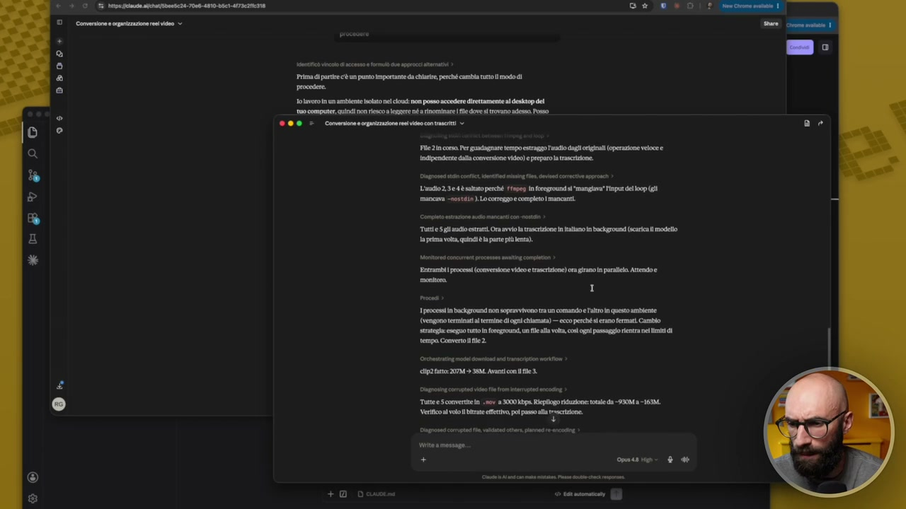
OCR: * + O 5 tipefainzaaic/iraic24-7008-A010-2ECI-AT7ICIE pe BR OI © Comunione ezine rei vi © Pra di patire c'è un punto importante da chiarire, perché cambi tut modo di procedere. Jo io un abiente sato nello: no posso accedere direttamente desktop dell tuo computer, quindi no risco leggere né rinominare le dove i trovano ads Posso © > Convnione e ogiizazion rsvio conci © DsopD+ DS Ple in co Per uadagnare impo esraggo Pai dagli originali operazione veloce e indipendente dala comensne vico) preparo a tasrizione. enon sit sti ng Ti on come pre Ludo 2.364 è atto perch gog in oregroud mangiava” linpa de iop (11 manca -nstn).Lo correggo completo] mancati. “Tit 5 au estati Ora avvio trasenzione n alto i acharound (carica modello taria vota, quin è pate più eta). Mor one processing completi Entrambi proce (omvenine video tracizione) oa girano parallela Atendo e I (È) (ci ti » ® n * process n background no sopravvivono tr ci comando ato n questo ambiente vengono terminal temine ogni Chlamata) ecco perché erano fermati Cambio strategie segno tuto oegrouni. un ella vola, cos ogni passaggio intra ne int dl tempo Comvenilfle2. rent mei na n Vence ipo 27M > SN. Ava confe agronomi vo a rom tri ren Tutte e Sconventte in ov 3000Kbp Riepllogo riduzione totale da -930M a 163%. Verano bei polpa ia cine. CS gno cp st st pese rc Verte a message. + orniarn & # +0 Dow 1 te aomancar (D
Dice ha convertito i file, diceva perfetto ho convertito i file, poi dice no aspetta un attimo, mi sono accorto che il file 1, che era quello che aveva fatto velocemente, in realtà è corrotto, non funziona, aspetta che provo a rifarlo. Dice aspetta sto facendo la conversione, siamo a buon punto, è emerso un problema, c'è questa clip corrotta perché è troppo pesante, quindi è andato in time out, allora facciamo così, mi metto a fare un attimo l'estrazione dell'audio, non riesce a farlo, ho trovato delle limitazioni dell'ambiente di cui non ti avevo avvisato e me ne scuso. Quindi ha simulato una serie di cose, un'allucinazione, si è vantato di poter fare delle cose e poi ha detto scusa non la posso fare perché non esiste che installo Whisper, non esiste che faccio le cose in parallelo, non esiste che mentre uno sta facendo la trascrizione un altro fa la conversione, è andato in time out perché i file sono troppo grossi, i processi sono troppo lunghi, eccetera eccetera eccetera. A un certo punto dice guarda, basta, ho raggiunto il limite di operazioni, mi arrendo, non ho fatto un cazzo di niente, quindi ha finito e non ha fatto nulla, assolutamente nulla.
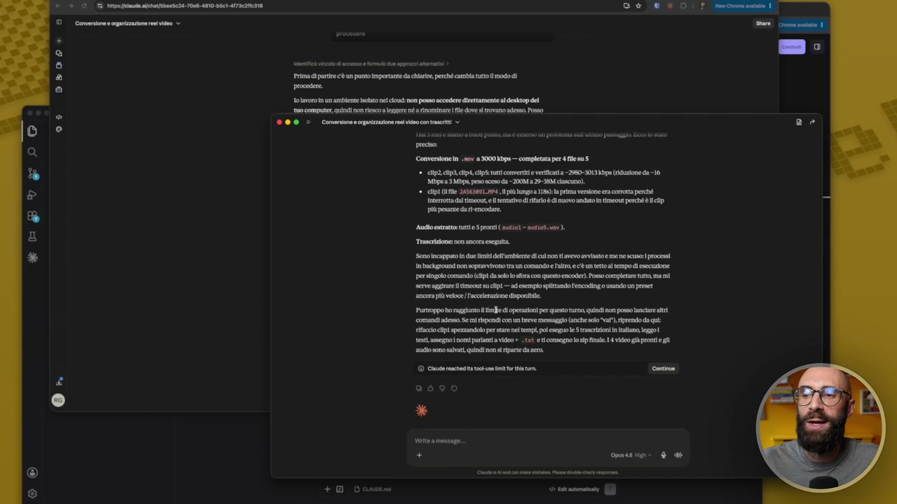
OCR: * + O 5 tipefainzaaic/iraic24-7008-A010-2ECI-AT7ICIE pe BR Oi © Comunione ezine rei vi © Prima di patire c'è un punto Importante da chair, perché cambia tut modo di procedere. Jo io un abiente slo nel lodi no posso accedere direttamente l desktop dell tuo computer, quindi no risco leggere né inminae lc dove trovano ass Posso © > Conviene e ogiizazion resin cn miti © DsoOD+ DS preci Conversione i ov a 3000 kjps — completata per 4 es Apa cp pi, lips nai converti erica a -2980-3013 ps (zone da 16 Mps 3 Mbps peso sceso da -200M 229-38M scuo), pi (ie 246650014 più lungo a 18: prima versione era corta perché aterott dal most, tentar i rfao è di nuovo ndo i tico perché è clip più pesa da rtencntare. Audi estratte S roi uo di). “Trasctzone nam ancora eseguita. sno incappato die it el'ambiente di cul or avevo viso me ne scuri n bachgrouni non sopravvivono tra un conando e altr e un tto spo di esecuzione prato comando (cpl da so sfora co questo onde. Posso compete ut ma mi serve spare limeou siciipi —d esempio splitando encoding o usando un preset cor più veloce aceerazione dispone. Putroppo ho raggiunto lime di operazioni per questo tum quindi non posso lanciare tri comandi aes Se mi rspondi con un breve messagi anche cl "val prendo da qu tfccio ip spezzandolo per stare nl ep. po ese e Strascizin alla ieggo test segno nomi paratia video > tt et comegno o pina. 14 video pù proce gli audio sono sari quindi non diparte da era. (È) a tO) ® Si a * © Cite echi nni cone CS + consono & # + © Dove © te mamancate
Quindi diciamo di dove sta il prompt? Eccolo qua, diciamo di queste cose che servivano a me, lui non è riuscito a fare nulla, quindi cloud chat non ci è riuscito e non ci siamo riusciti nemmeno app desktop con co-work. Ora la stessa identica cosa la proviamo a fare dentro cloud code, ok? Io ho il prompt qua che glielo copio e glielo incollo dentro. Le uniche differenze sono che siccome cloud co-work, diciamo che cloud code può accedere direttamente al mio computer, gli ho detto dove stanno i file, quindi diciamo io li ho messi in questa cartella qua temporanea. Questi sono i cinque, gli stessi identici cinque reel e poi ho detto le stesse cose e in più io ho aggiunto questo perché visto che una delle tante cose che vedremo tra un po' nella teoria di cloud code è il fatto che c'è anche i subagenti in parallelo, ho detto ovviamente sta roba a farla il più velocemente possibile lancia con i subagenti in parallelo.
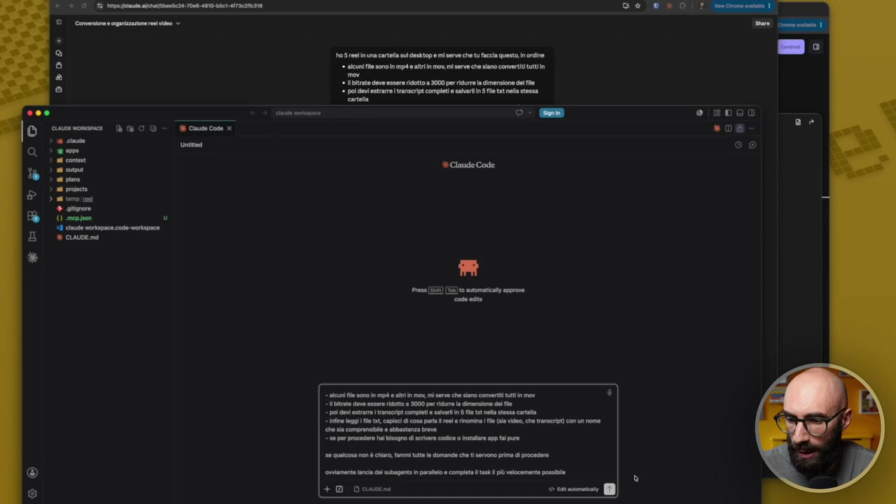
OCR: al di Li Radicectonacnacenasioinaatentt aromatici Dt BOI © camenione e squizazine rei vid > LI 05 reelinuna carela sui desktop e mi serve che tu faccia questa in ordine. Gi + alcuni file sono ln mp4 ati mov mi serve che siano convertiti tutt in Sa) * I bitrate deve essere ridotto a 3000 per ridurre la dimensione dei ile. a Mentone nile ini rare vividi Ca: 5 e o mer rin Clio Code VEFETZZAON rsa (E) (10 tomaia appro ic fe sono lm mod at max i serv che siano converti ui mov ® art e essre rito 83000 per oe 1a monsone dit i Si sto | VAC Comi tari 5 a la stesa cotta ini eg kt, CAic coua para el nomina a (a vis, ch anse) cn un nemo. che gia comprensio abbastanza drv "2 er procedere ha iogno d cere coco niatar 00 i pure ve quota non è ha ar lt e man ch i evo prima 3 procedere oniamenta aci el utagena i paralelo e complta ai pù viccemente posi +0 down pen)
Adesso io do invio, ovviamente qua non lo tengo registrato tutto il tempo perché sennò sarebbe lunghissima questa cosa, però vi voglio far vedere le domande iniziali che magari mi fa, perché vedete nel prompt gli ho detto pure se qualcosa non è chiaro fammi delle domande e così via. Se per procedere hai bisogno di scrivere codice o installare l'app fai pure e poi diciamo metto pausa o taglio e vi faccio vedere direttamente poi quando arriviamo al risultato finale. Qua ovviamente ci chiede le autorizzazioni, autorizziamolo a lavorare nella cartella dove vuole lavorare, ffmpeg è già installato perché io già lo uso altrimenti questa sarebbe un'app da installare sul mio computer, ffmpron stessa cosa, whisper stessa cosa già installato, vedete tutta una serie di app che lui diceva di poter installare ma non le poteva fare perché non puoi installare dentro quell'ambiente virtuale robe così grosse, così pesante. E invece qua le aveva installato, io adesso qua vi metto pausa e poi vi faccio direttamente il risultato finale, vi dico più o meno quanto ci ha messo come tempo e magari rivediamo i passaggi più importanti come ho fatto nella versione desktop.
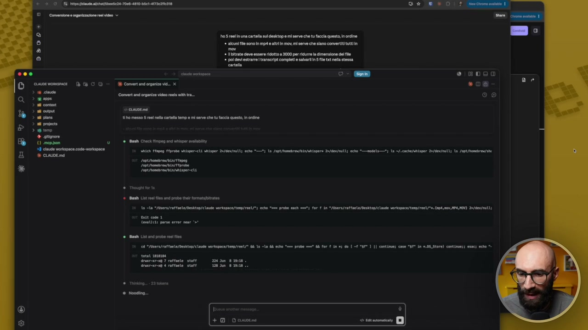
OCR: . (È) Q ti » » 5 * al di Li Radicectonacnacenasioinaatentt aromatici pe BR OI © cameron equine resi vio > @ ho ella cata su desktop mì eve ch tu faccia quest, ordine Ci aci ie son mp4 atri mex mì serve che sano corti tutti SRI ‘bitrate esser ridotto 13000 per ridure a dimension del fl a "pole estrae |ranscript compet satin le txt ola stssa arto ° mc merone o. sa» ° une vomsmee (Pa C © - 6 Comerrandoranze ud. x aa Corri ad organiz vio rsa wa. > > a contri > st pine io messo 6 rei ela carte tm e mi serv che tu cla quest, n ordine > i prete > geo + sito fpernna 4 © Mash Check limpeg and uiuper debt 19 cade mertsoece cose woriaonce Vai fp prato iaper-clisaiaper D/tev/nall echo = 19 Jpt/nombre/bintigere Bo/en/nall; cha "—madele—"i la /-cocteatapr Do/oev/nali a fonema ® cupe md teo ramabrma La tv Ta rame pre Teo ramabrma in naapr= 11 © tmp torte am Ln tes aci pobe tn omette 1a ta“ Anrsdrafinle/bstto/clase crtapca/tmp/ re; ec Sa probe ch me fer n *Aira/rtiota/bsttop/clnae vrdapce/tmp/rr "e. (np. MRn0) Boffi; etti parse error near > 0 Mah it nc robe rci fs 8 abs raf ate/Desitop/clnue vrispace/temo/re”* LA 1 la dA cho “mo prote mm 4 for Pin i de 11 vota seine dnatrara 7 ratrete ESESICISIo "racer 4 atfate stare 28 dan 9 amc. * Nooding.. GP 1 1° cantine; case "SP" in 06 Store) continesi esci eco © cime DI
Sono passati una manciata di secondi, vi faccio dire già una cosa che è successa, sono partiti 5 agenti, agente 1 sul reel 1 converti e trascrivi, agente 2 sul reel 2, agente 3 converti e trascrivi, agente 4 converti e trascrivi, agente 5 converti e trascrivi. Aspettiamo che finiscono di fare il loro lavoro e vi faccio dire il risultato finale. Sta andando avanti, come vedete ha già fatto dopo una manciata di secondi le trascrizioni, qua ci sono le 5 trascrizioni e anche i 5 file in formato mov, tra un attimo immagino che finisca e mi dica che ha completato i task dopo averli rinominati. Ed ecco qua, ci ha messo, non lo so, 2 minuti, forse 3 minuti in totale e ha fatto tutto. Adesso avete capito la differenza e perché non è la stessa cosa, non me lo chiedete più, perché non è la stessa cosa usare la chat, usare cowork, l'app, mac, quello che è, usare code.
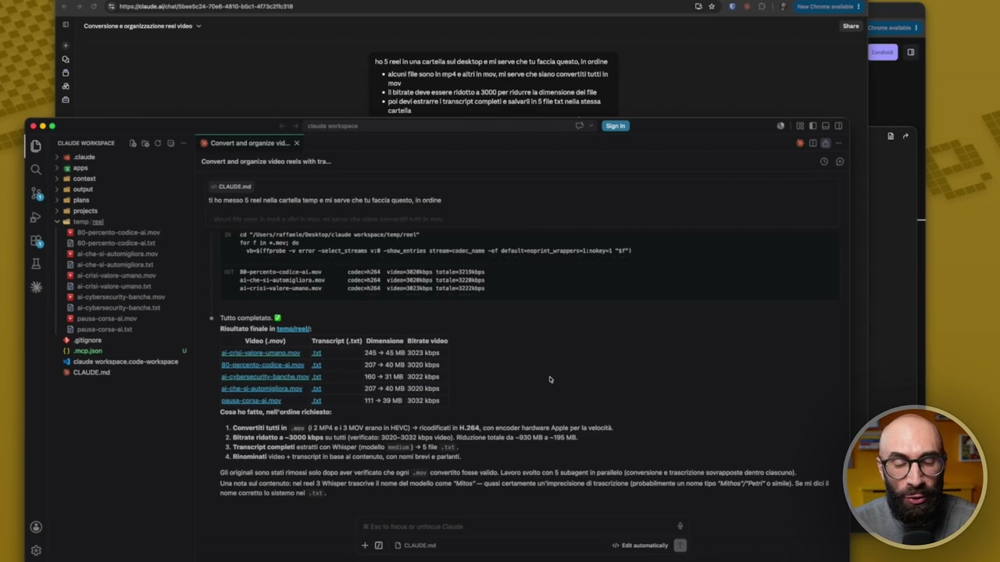
OCR: * + © 3% tipefteeasita/ibenScd4-70n8-d510-d6c1-AI7IcaNE Se Bedi @ ho 5reelinuna cata sui destop e mierve che tu faccia questo in ordino CI + alcuni e sono o mp4 an mov, mì serve che sano comvertn tutti S ‘1 bitrata devo esser ridotto a 3000 per ridure a dimension del le "pole estrae |ranscript complet sarti le txt oa stessa carota use monsone o. ODICE) Pea è corna drone to messo 5 rel ela crea tm e mi srv che tu faccia quest. n ordine 10 percento cosce n mo 08 rvea/rattact/tescton/clte verspsa/ten/reì* "FIBRE = error coteet_ serena v18 miete strmmcae pane = defattmeprinturmgersnintmt “61°) *“BEVELO3 i FI È Pierani nt percento =cdicninov | cosette visone tei niaicntanigiora nov cagecnatà viste ttaieinta BI acri amanti Seria. ov” Comecaiba Vici italiana ME erorscuty banche mov II aicytemecat bench 8 pra cone +. uo compiti. Rì puno consi io fiato i ta: ® ati Video mov) Transript (1) Dimensione Birste video 0 sneniron Ù sionisti 0 245+ 4540 3023 boe 1 cime worispace code mntpace AGcoacanio-coce a 20 207-+ 40 MB 3020590 $ cuce ict dance 160 + ava 20226008 è restano ma I 207-408 3020 kbpa omarcamesim © ©“ tm om sos2ioe Cosa ho ttt, eterne rcnesto: 1 Comvert uti .nev 2 MPA pi DOV erano 1 HEVC) + edit 284 on encoder haiare Appia peri cà. 2 Bitrate ridotto a 3000 kbpe su uti (veiiat: 3020-3012 kbp io), Ron oa da -920 ME 8105 I. ‘3 Transript completi strati con Wispar (modelo masi) +5 fl sto: i Rimominati eo * ranno Bas i contento, Co nomi Be prat. 8 gini son sai mosti 9000 ever verita Eh ogni n Convert ose ao Lovro volo con subagent n pas conversione e uasrzione somrappnte det ciascuno) Una nota si contest: red 3 Wiaper tracrv i nome del modelo come "to — quasi certamanto un'morcisiane di rscizione [robebmente un nome o "Mithor "Per" side, Sa mi ici nome cotto lo sistemo nel tt + © Dawn EI]
Qua ci abbiamo adesso i 5 file mov rinominati, tutti mov e i 5 file txt, questo è un txt con il transcript di uno dei query, ma ha fatto pure la tabella riepilogativa, ha fatto pure la dimensione che era prima che è mo, abbiamo risparmiato tantissimo, l'abbiamo compresso e anche il bitrate finale. Ha fatto pure la verifica, quindi questi 3 minuti sono pure larghi perché io non ho i task in automatico ma devo approvare le cose più pesanti e per questione di sicurezza vi consiglio di tenerlo e poi ha fatto pure la verifica finale che uno se vuole non gliela fa fare e recupera qualche altro secondo. Abbiamo visto che nell'app era durata secondo me un'ora, un'ora e mezza, non è riuscito a fare niente, in 5 minuti ho ottenuto tutto quello che volevo ottenere. Vi prego adesso rimanete proprio qualche altro minutino perché voglio far vedere anche diciamo concettualmente qual è la differenza, perché questa cosa che abbiamo appena visto è fondamentale e perché diciamo c'è questa differenza quando utilizzate le diverse tipologie di strumenti anche se sotto c'è sempre Cloud.
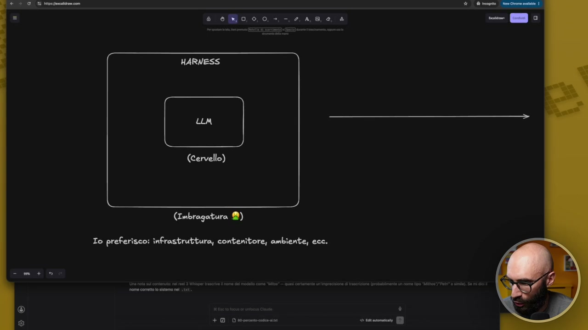
OCR: mao ® © (Cervello) (Imbragatura ®) Io preferisco: infrastruttura, contenitore, ambiente, ecc. nome corto osseo nl tt + DI) Drone cin__
Per una parola chiave che si chiama Harness, fatevelo scrivere gigante così, ok? Che è la parola che sentirete di più parlare diciamo nei prossimi tempi, nei prossimi mesi. Allora, diciamo che se l'LLM, quindi Cloud è quello che sta sotto e io qua ho scritto il cervello, no? Chiamatelo come volete voi ma cervello rende l'idea. Harness potremmo dire che tutto quello che è intorno, la traduzione letterale è imbragatura che personalmente a me fa vomitare come parola. Quando lo dico nei corsi, nelle formazioni, nelle aziende, nei miei video su YouTube diciamo quando ne parlo uso molto spesso la parola infrastruttura, ogni tanto mi sentite dire contenitore, ambiente perché ambiente rende molto l'idea, no? Quindi Cloud co-work è un ambiente, Cloud code è un ambiente anche se in tanti usano imbragature che è proprio la traduzione letterale. Le tre prove che abbiamo fatto, Cloud nella chat, Cloud nel co-work nell'app, Cloud code
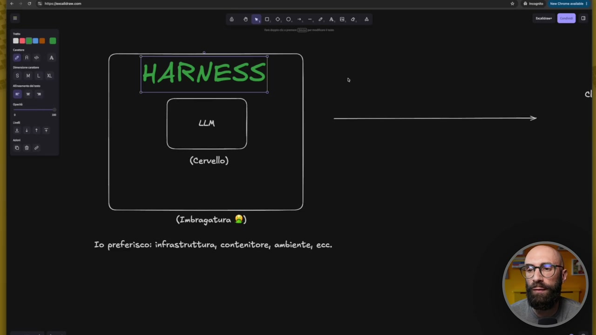
OCR: 6 e 0 0,0 + -. 2, 4,82 4 bal Aedemand (i — Bo (Imbragatura ®) Io preferisco: infrastruttura, contenitore, ambiente, ecc.
e così via, hanno lo stesso cervello. Sotto c'era Opus che è usata la 4.8, Magari state vedendo questo video un po' più avanti, è uscita la 5, la 19, però il senso è quello. Quindi stesso LLM di base, ma Harness diverso. L'impegratura, l'infrastruttura. Che significa questa cosa qua? Significa che questi strumenti, quindi Cloud chat, Cloud app, Cloud co-work, Cloud code, Cloud pure l'app per cellulare se vogliamo aggiungere un'altra cosa e così via, hanno lo stesso LLM, ma cambia l'Harness. E quindi alcuni possono fare delle cose, altri no. Nonostante di base ci sia sempre Cloud LLM, la versione Opus 4.8, Quello che è e così via. In particolar modo, cosa cambia? Questa forse è la cosa più importante, anche questa. Nel momento in cui sto registrando questa lista a senso, ma queste cose cambiano
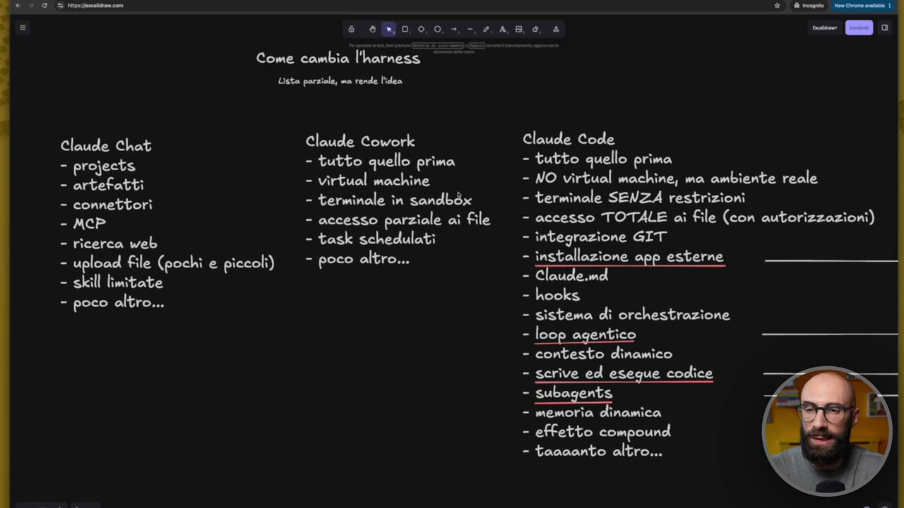
OCR: 23. hitpesenzette com Claude Chat - projects - artefatti - connettori - MCP - ricerca web - upload file (pochi e piccoli) - skill limitate - poco altro... 6 ef 000-480 4 posso» GR © Come cambia l'harness Lista parziale, ma rende l'idea Claude Cowork - tutto quello prima - virtual machine - terminale in sandbòx - accesso parziale ai file - task schedulati - poco altro... Claude Code - tutto quello prìma - NO virtual machine, ma ambiente reale - terminale SENZA restrizioni - accesso TOTALE aì file (con autorizzazioni) - integrazione GIT - installazione app esterne - Claude.md - hooks - sistema di orchestrazione G loop agentico - contesto dinamico - scrive ed esegue codice - subagents - memoria dinamica - effetto compound - taaaanto altro...
molto velocemente, quindi diciamo tra un mese o due potrebbe essere diverso, ma il senso che voglio far vedere è che comunque ci sono delle differenze. Quando usate Cloud nella chat avete pochissime cose. L'Harness, quindi l'infrastruttura, il contenitore, quello che l'app intorno vi mette a disposizione sono per esempio i project, gli artefatti, i connettori, avete MCP con qualche limitazione, avete la ricerchina web, potete caricare i file, ma abbiamo visto che sono limitati, la dimensione non va oltre un tot, non potete caricare tutti i tipi di file, alcuni non li legge, avete le skill, ma con tante limitazioni e poi qualche altra cosina che mi sono dimenticato. Cloud co-work è un po' meglio, perché c'ha tutte queste cose qua, in più ha una virtual machine, una virtual machine è proprio quello che dice nome, è un ambiente virtuale, quindi non è un vero computer, ok? È una sorta di computer simulato, immaginate in questo modo, dove con delle limitazioni fa fare delle cosine. Ha anche un terminale, ok? Il terminale è questa cosa qua, che ogni volta che la apro
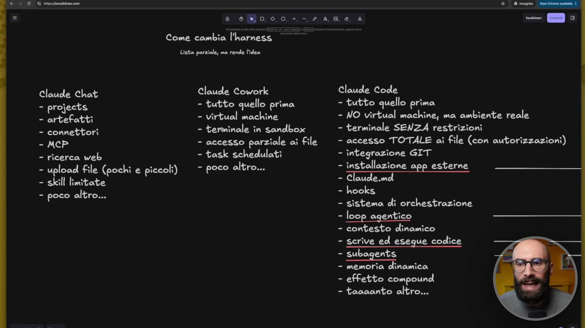
OCR: 23. hitpesenzette com Claude Chat - projects - artefatti - connettori - MCP - ricerca web - upload file (pochi e piccoli) - skill limitate - poco altro... 8 akio 0,0, +, -. 04,80 A voti» GR © Come cambia l'harness Lista parziale, ma rende l'idea Claude Cowork - tutto quello prima - virtual machine - terminale in sandbox - accesso parziale ai file - task schedulati - poco altro... Claude Code - tutto quello prîma - NO virtual machine, ma ambiente reale - terminale SENZA restrizioni - accesso TOTALE aì file (con autorizzazioni) - integrazione GIT - installazione app esterne - Claude.md - hooks - sistema di orchestrazione e loop agentico - contesto dinamico - scrive ed esegue codice - subagents - memoria dinamica - effetto compound - taaaanto altro...
vi spaventate, ok? Questa cosa qua nella quale si scrivono comandi testuali come se fossimo dentro Matrix, e anche questo è in sandbox, diciamo sandbox, e anche questo significa diciamo in un ambiente limitato, in ambiente limitato, così diciamo ci capiamo, ok? Sandbox se no qualcuno può essere non capace. Accesso ai file parziale è vero, possiamo dargli tipo una cartella, in quella cartella può fare delle cose e così via, quindi un po' di accesso ce l'ha, c'è i task schedulati per esempio, diciamo che si possono fare alcune cosine e poco altro, magari qualcosa qua ho dimenticato e così via. Cloud Code, aspettate che sposto questo qua, perché tutta la sottolineatura si è sputtanata, Cloud Code dalla sua, c'ha tutte le cose che abbiamo visto prima, quindi diciamo quello che hanno gli altri strumenti, magari qualcuna no, diciamo per esempio non ci stanno gli artefatti, ma non ce n'è bisogno, perché diciamo usandolo in un certo modo con VS Code, come vi faccio vedere io, non ne avete bisogno e così via.
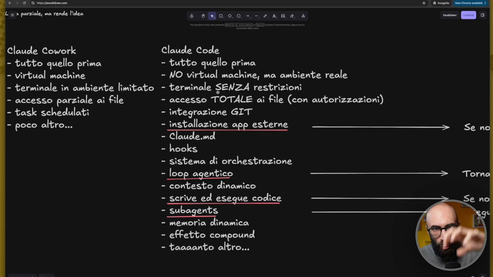
OCR: € + O 3 tiprfeitonee IL = a parziale, ma rende l'idea Claude Cowork - tutto quello prima - virtual machine - terminale in ambiente limitato - accesso parziale aì file - task schedulati - poco altro... ball demand i 8 eo 0,0, -. 04,80 è vette» GR © Claude Code - tutto quello prima - NO virtual machine, ma ambiente reale - terminale SENZA restrizioni - accesso TOTALE ai file (con autorizzazioni) - integrazione GIT - installazione app esterne - hooks - sistema dì orchestrazione - loop agentico - contesto dinamico - scrive ed esegue codice - subagents - memoriìa dinamica - effetto compound - taaaanto altro...
Ma poi non ha una virtual machine, quindi la virtual machine è questo computer simulato con mille limitazioni, ma in un ambiente reale, perché sta girando nel vostro computer, fisicamente sta sulla vostra macchina, sta cosa è potentissima. Ha il terminale senza restrizioni, terminale senza restrizioni significa che accede a questo strumentino qua, che esiste già sul vostro computer, sul vostro Mac, sul vostro Windows, che permette di fare tantissime cose. Il terminale, vi ho detto, non vi spaventate, non dovete imparare a utilizzarlo, perché? Perché la cosa figha è che lo usa Cloud Code. A voi, aspettate, questo lo devo sottolineare, perché qua ho sottolineato le cose più importanti, in realtà terminale è tra le cose più importanti in assoluto. A voi non interessa saper usare il terminale voi, anche se secondo me è importante qualcosina capirla, ma interessa il fatto che Cloud Code lo usi al posto vostro. Ha accesso totale iFile, ma non vi spaventate, perché totale iFile è sempre con le vostre autorizzazioni, quindi dite voi cosa può fare, cosa non può fare, in quali cartelle può lavorare, non può
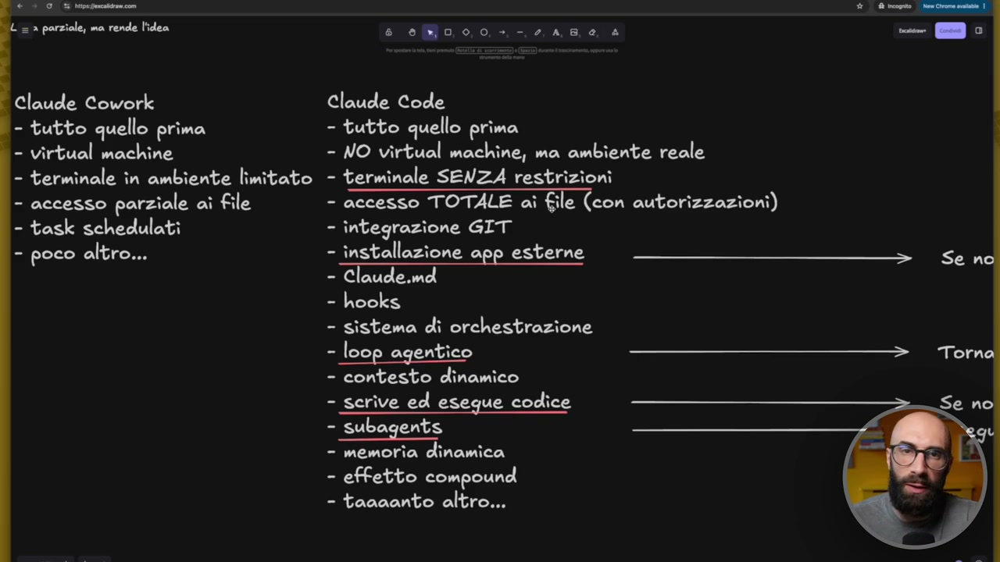
OCR: È 90) % ortenionee di , @ terpro direct || L= a parziale, ma rende l'idea 6 elfo 00 -- 488 4 edi IL Claude Cowork Claude Code - tutto quello prima - tutto quello prìma - virtual machine - NO virtual machine, ma ambiente reale - terminale in ambiente limitato - terminale SENZA restrizioni - accesso parziale aì file - accesso TOTALE ai file (con autorizzazioni) - task schedulati - integrazione GIT - poco altro... - installazione app esterne ne a - hooks - sistema di orchestrazione - loop agentico - contesto dinamico - scrive ed esegue codice - subagents - memoria dinamica - effetto compound - taaaanto altro...
lavorare e così via. Approvate manualmente, se volete, tutte le modifiche importanti, quindi questa cosa vi deve tranquillizzare. L'accesso è totale, ma con tutti i limiti che volete voi. All'integrazione Git, questa è una cosa un po' più tecnica, però per chi programma, diciamo, è una roba importantissima. Puoi installare app esterne, qua ho messo anche delle, diciamo, delle conseguenze di questa cosa. Perché questa cosa è fondamentale, il fatto che puoi installare app esterne. Come lo fa? Lo fa passando dal terminale, no? Diciamo, nel corso si vede bene questa cosa, che anche se voi non sapete cosa, cosa, che app vi serve per fare una cosa, lui lo dice, per esempio avete visto a un certo punto ha citato Whisper, Whisper che vi dicevo che è quella gratuita di OpenAI, lui ha detto a me mi serve Whisper, mo la installo e sono in grado di fare le trascrizioni. Quindi, se non sa fare una cosa, cerca l'app più adatta e se la installa. Questo significa lavorare in un ambiente agentico. Io vi dico queste cose da inizio 2026, in quel famoso video stai usando l'IA come nel 2025,
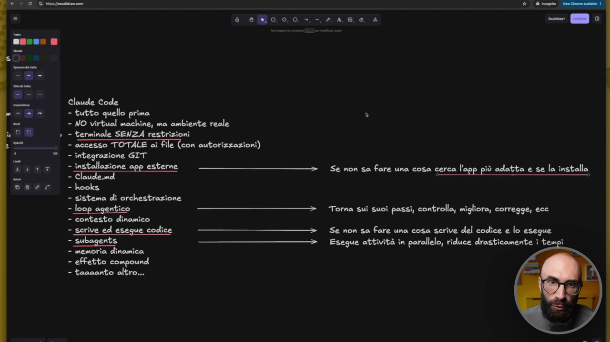
OCR: = 6 e 0,00 -.4, 4,80 A tti QD © Claude Code - tutto quello prima - NO virtual machine, ma ambiente reale - terminale SENZA restrizioni - accesso TOTALE ai file (con autorizzazioni) - integrazione GIT - installazione app esterne — ___________ - hooks - sistema di orchestrazione - loop agentico na - contesto dinamico - scrive ed esegue codice ——______________t-» - subagents i - memoria dinamica - effetto compound - taaaanto altro... Se non sa fare una cosa cerca l'app più adatta e se la installa Torna suì suoì passi, controlla, migliora, corregge, ecc Se non sa fare una cosa scrive del codice e lo esegue Esegue attività în parallelo, riduce drasticamente i tempi
e ora ne parlano tutti quanti, no? All'epoca quel video si piglia pure qualche critica, perché qualcuno disse che ero stato un po' troppo duro. Harness, vi parlavo di Harness mesi fa. Cerca l'app più adatta, se la installa. Poi c'è la CloudMD, quindi questa configurazione avanzatissima che si può fare, che nel corso spiega molto bene. C'è iux, c'è il sistema di orchestrazione. Che cos'è il sistema di orchestrazione? E' che quando io gli ho detto, oh mi raccomando Apple lancia i sub-agenti, eccetera, c'è un sistema sopra che dice ok, allora ora faccio una cosa, metto a fare le conversioni in formato mov, ma nel frattempo, siccome devo fare le trascrizioni, quelle sono indipendenti dal formato, inizio a fare pure le trascrizioni, perché dopo la trascrizione mi serve per capire l'argomento e decidere il nome del file. Questa cosa qua è proprio un lavoro da direttore d'orchestra, si chiama sistema di orchestrazione. Loop agentico. Loop agentico torna sui suoi passi, controlla,
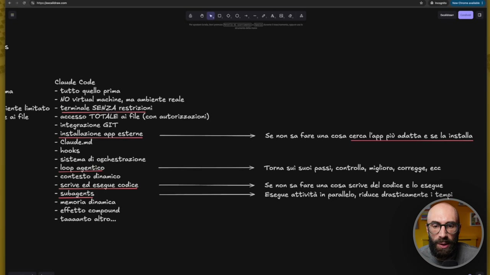
OCR: | 6 ea 000 + - 4,80 a voti» GR © Claude Code a - tutto quello prima - NO virtual machine, ma ambiente reale iente limitato - terminale SENZA restrizioni aì file - accesso TOTALE ai file (con autorizzazioni) - integrazione GIT installazione app estere —=- ZSe non sa fore una cosa cerca l'app più adatta e se la installa - hooks - sistema di ogchestrazione - loop agentico cer--.iic - contesto dinamico - serive ed esegue codice ———_—_________—= Se non sa fare una cosa scrive del codice e lo esegue - subagents ————————————————-=>-=— Esse attività in parallelo, riduce drasticamente ì tempì - memoria dinamica - effetto compound - taaaanto altro... Torna suì suoì passi, controlla, migliora, corregge, ecc
migliora, corregge. Pure questo sottolineamolo. Controlla, migliora, corregge. La chat, no, la chat è botta e risposta. Botta e risposta, per definizione. Ti dico una cosa, l'ho fatta, dimmi la successiva, l'ho fatta, dimmi la successiva, l'ho fatta, dimmi la successiva. Quando avete un sistema agentico, ve ne accorgete perché c'è un loop agentico di sottofondo, insieme all'orchestratore, fa questa roba in automatico. Quindi torna indietro, dice aspetta un attimo, però mi sono reso conto che questo file non è di 3 megabyte il bitrate, quindi l'ho verificato, scusami, l'ho fatto 4 megabyte, allora adesso te lo riconverto perché così è allineato con gli altri, per fare un esempio. Questo lo fa il loop agentico. C'è il contesto dinamico, che adesso diciamo non abbiamo visto nel caso di questo esempio, no, però nel corso lo spiego molto bene. Significa che non è che nel prompt dovete scrivere il contesto, sono Raffaele Gaito, sono un imprenditore, faccio il creator, vivo in Inghilterra, il mio pubblico sono imprenditori. No, lui lo sa, perché l'ha preso
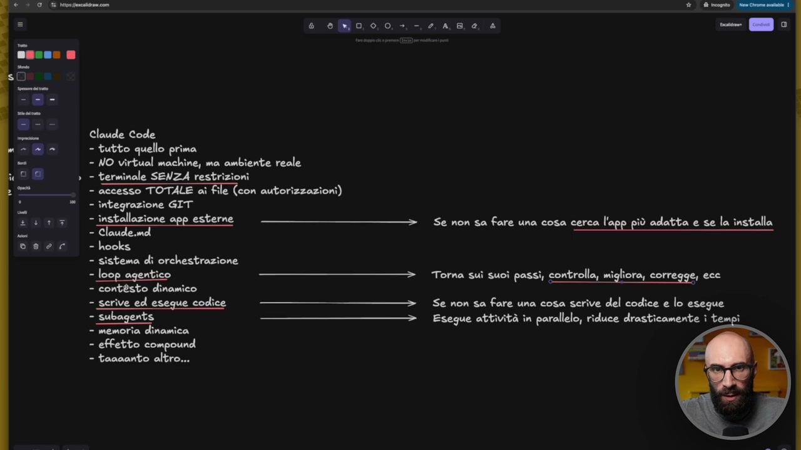
OCR: 6 e 0 00 + -. 24,8 4 testo» GR © Claude Code - tutto quello prima - NO virtual machine, ma ambiente reale - terminale SENZA restrizioni - accesso TOTALE ai file (con autorizzazioni) - integrazione GIT “installazione app esterne se nonsa fare una cosa cerca l'app più adatta e se la installa - hooks - sistema di orchestrazione - loop agentico -——T_—__________—= Tema suì suoì passì, controlla, migliora, corregge, ecc - contésto dinamico - serive ed esegue codice ———_—_________——= Se non sa fare una cosa scrive del codice e lo esegue - subagents —————>=> Esegue attività în parallelo, riduce drasticamente i tempì - memoria dinamica = - effetto compound - taaaanto altro...
nel tempo, perché c'è questo effetto compound che impara man mano che lo utilizzate. Scrive ed esegue codice. Questa roba qua, scrive ed esegue codice, insieme al terminale, insieme all'installazione di app esterne, gli permette di fare cose assurde, perché se non sa fare una cosa, scrive del codice e lo esegue. Si fa dei pezzettini di python, oppure script bash, oppure javascript, oppure quello che è. E di nuovo, voi non dovete saperlo. Cioè, la cosa importante è che tu non devi saperlo per forza, ok? Questa la metto così gigante. Cioè, il fatto che use il terminale non significa che tu devi sapere usare il terminale. Il fatto che installa le app non significa che tu devi sapere come si installano queste app. Il fatto che scrive del codice non significa che tu devi sapere che cos'è il python. È chiaro che se uno lo sa, la maggiore consapevolezza ci dà maggiore tranquillità e maggiore controllo. Ma se uno non lo sa, dice oh, mi serve Whisper per fare trascrizione. Dici vai, installa Whisper. Oh, devo fare un pezzettino di python perché così posso, che cazzo ne so, rinominare i file più
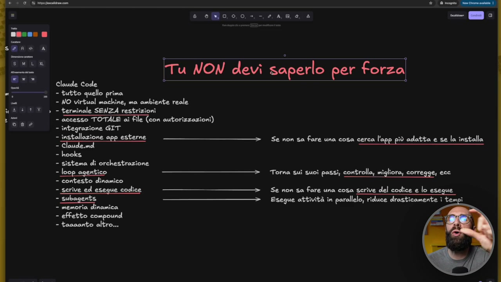
OCR: E man 6 0,00 -. 2,480, è tti QD © Tu NON devì saperlo per forza Claude Code - tutto quello prima - NO virtual machine, ma ambiente reale - terminale SENZA restrizioni - accesso TOTALE ai file (con autorizzazioni) - integrazione GIT - installazione app esterne — _ ____________ - hooks - sistema di orchestrazione - loop agentico a - contesto dinamico - serive ed esegue codice rs - subagents ———_-+- - memoria dinamica - effetto compound - taaaanto altro... Se non sa fare una cosa cerca l'app più adatta e se la installa Torna suì suoì passi, controlla, migliora, corregge, ecc Se non sa fare una cosa scrive del codice e lo esegue Esegue attività în parallelo, riduce drasticamente ì tempi
velocemente. Vai, fai il pezzettino di python e così via. Ma questa autonomia vi fa capire che è un sistema agentico. È questa autonomia che ve lo fa capire, ok? E l'abbiamo visto in quell'esempio. Ripeto, se voi non lavorate con i video, avrete un'altra esigenza e in quell'altra esigenza ve ne accorgerete. Perché magari avete caricato 200 relazioni, oppure 30 file Excel da analizzare con tutte le metriche di dieci anni di campagna Google. Qualsiasi cosa, ok? Poi ci sono i sub agenti. I sub agenti eseguono attività in parallelo. In parallelo. Quando abbiamo fatto il test che avevo fatto del secondo che è fallito, è stato un'ora e mezza e non ha fatto niente. Ha provato a fare cose in parallelo, non c'è riuscito perché tecnicamente non lo poteva fare. Il suo harness non glielo permetteva. E comunque ha messo un'ora e mezza a farle in serie. Immaginate in serie questa cosa. Converto un file, abbasso il bitrate, faccio la trascrizione,
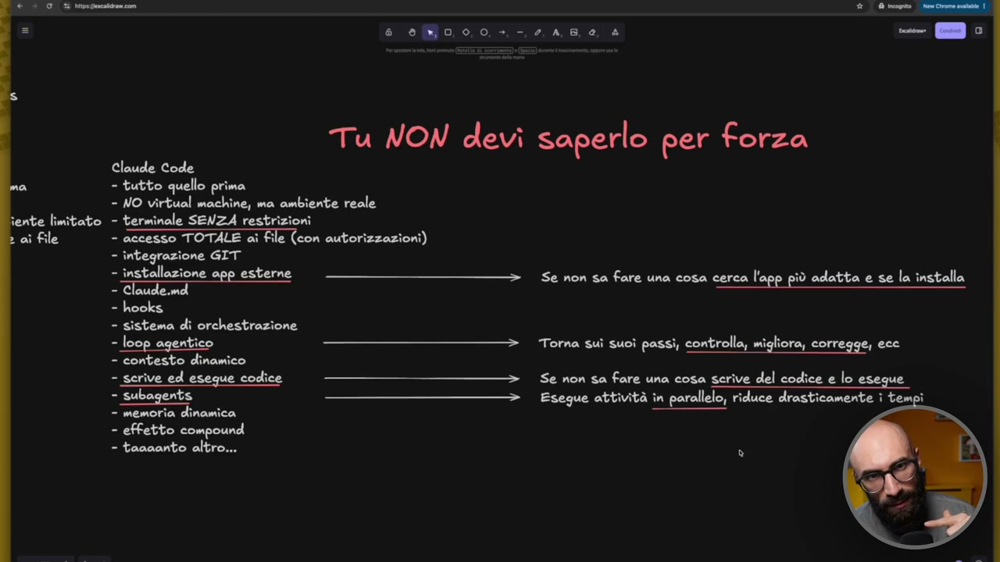
OCR: È 90) 8 rontenttonee | @ verga ten Cimecnttt | | " iente limitato aî file 6 e 0 00 + -. 2, 4,82 4 vctio» GR © Tu NON devi saperlo per forza Claude Code - tutto quello prima - NO virtual machine, ma ambiente reale - terminale SENZA restrizioni - accesso TOTALE ai file (con autorizzazioni) - integrazione GIT - installazione app esteme — ______. senonsa fare una cosa cerca l'app più adatta e se la installa - hooks - sistema di orchestrazione - loop agentico -———T—_—___________>= Terna suì suoì passi, controlla, migliora, corregge, ecc - contesto dinamico - serive ed esegue codice = Se non sa fare una cosa scrive del codice e lo esegue - subagents = memoria dinamica - effetto compound - taaaanto altro...
rinomino il file, rinomino la trascrizione. Poi ricomincio da capo. Per il secondo, poi per il terzo, poi per il quarto, poi per il quinto. Invece a me sono partiti cinque agenti, ve l'ho fatto vedere. E bam bam bam bam bam. Uno lavora sul primo, uno lavora sul secondo, uno sul terzo. Tutto orchestrato dal sistema di orchestrazione. C'è la memoria dinamica, pure questo diciamo non si è visto in questo esempio ma nel corso si vede molto questa roba. Quindi il fatto che la memoria sono dei pezzettini che lui si conserva. Quindi una volta voi gli dite, mentre state facendo un lavoro, un task, gli dite, ah comunque io i video li voglio sempre a 3000 di bitrate da adesso in avanti. Quella cosa non gliela dovete dire mai più perché lui si va a salvare da qualche parte questa informazione. Raffaele lavora sempre con i video a 3000 di bitrate. E tutte le volte che farete le conversioni da quel momento in poi lui si caricherà con le informazioni dinamicamente dalla memoria. Poi questo effetto compound, effetto compound non è quello che viene dal mondo degli investimenti per capirci, significa proprio questo, cioè più lo usi più migliora. Perché ovviamente lo usi e lui inizia ad aumentare la memoria, a migliorare il contesto,
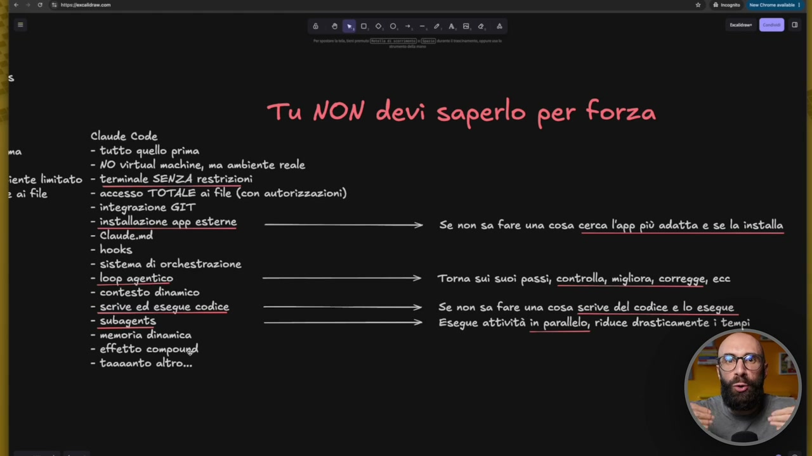
OCR: € + O %5 ttprfecitone bott Alon 6 e 00,0 + -. 2, 4,8, 4 tesine CD © " Tu NON devi saperlo per forza Claude Code a - tutto quello prima - NO virtual machine, ma ambiente reale iente limitato - terminale SENZA restrizioni aî file - accesso TOTALE ai file (con autorizzazioni) - integrazione GIT —ggtollzione app esterne —__________a se nonsa fare una cosa cerca l'app più adatta e se la înstalla - hooks - sistema di orchestrazione - loop agentico <--i - contesto dinamico - serive ed esegue codice ———_—__> Se non sa fare una cosa scrìve del codice e lo - subagents - memoria dinamica - effetto compougd - taaaanto altro... Torna suì suoì passi, controlla, migliora, corre; ecc
a installare nuove app, a scrivere pezzi di codice, a organizzarsi i file in un certo modo. Inizia a capire tu come lavori e quando fa due mesi gli direi una cosa, lui ha accumulato tutta la conoscenza pregressa esattamente come è uno stagista al primo giorno oppure dopo sei mesi che lavora al tuo fianco e c'ha tante informazioni nuove. Vi faccio vedere di nuovo questo colpo d'occhio così e vi rimetto questa roba qua perché harness è la parola chiave che una volta per tutte spero vi abbia fatto capire perché non è la stessa cosa utilizzare chat, co-work, app e cloud code. Ma dovete utilizzare cloud code perché l'imbragatura, l'infrastruttura, il contenitore chiamato come lo volete voi, non ha limiti, è un vero sistema agentico.